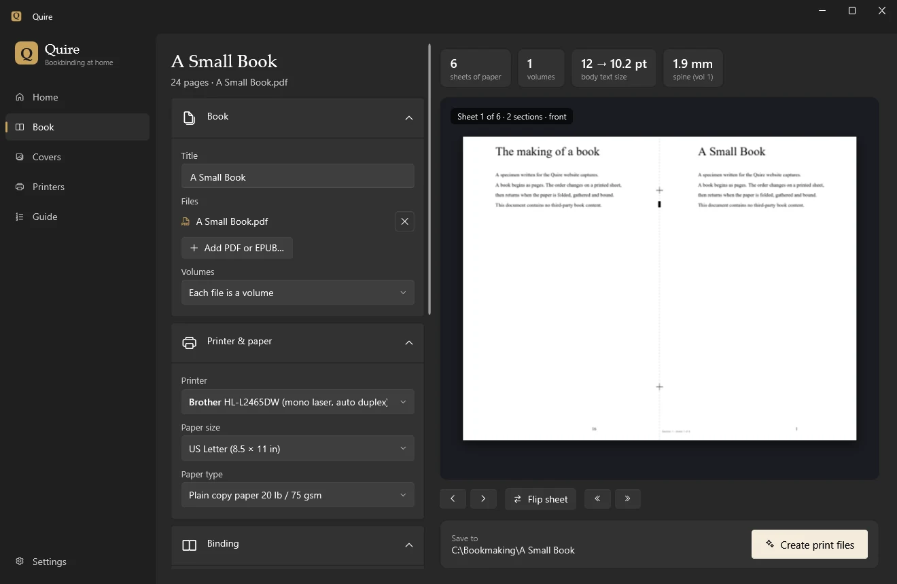
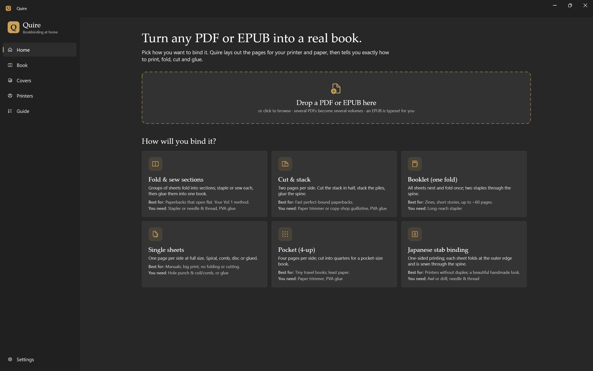
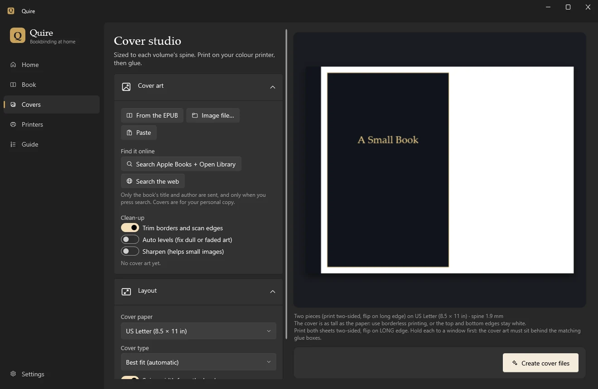

Quire
A book begins with pages. Quire helps you turn them into something you can fold, gather and bind.
Import a PDF or EPUB, choose the paper and binding, inspect every sheet, then create the print files and cover. Native Windows tools keep the next practical step close to the preview.

Plan the book, then make it.
PDF pages can be cropped and fitted consistently. EPUBs are typeset with WebView2 and split into volumes at chapter boundaries. Six binding layouts cover sewn signatures, cut-and-stack, saddle stitch, single sheets, pocket four-up and Japanese stab binding.
Printer-driver checks, a calibration sheet and step-by-step guides support the physical work. The release tests verify driver acceptance; they do not establish results on paper.

The cover belongs to the book.
Cover Studio supports a one-piece wrap, a two-piece cover with a glue map, and front/back panels. Sizes follow the volume and spine; image tools check resolution and prepare the artwork.

A dedicated home for Quire.
The separate Quire website includes the illustrated workflow, binding guide, requirements, FAQ and release integrity record. It is prepared for deployment; a public address has not been assigned.
Dedicated website source & preview instructions · GitHub access required
Release & requirements
Version 1.1.0, published 25 October 2026. Windows 10 or 11, x64. The executable is self-contained; no .NET installation is needed. EPUB typesetting requires Microsoft Edge WebView2 Runtime, included with Windows 11.
The executable is publicly downloadable from Quire’s distribution repository. The application source repository remains private. The executable is unsigned; its size and SHA-256 are recorded below.
Download Quire 1.1.0 for Windows x64Public release and checksum fileApplication source · access requiredMachine-readable release record
Quire.exe · 77,868,455 bytes · SHA-256 c475513aa80b263f5780240a34157cda049ec2d734b7b67b24475f4479564a6e.
The verified screenshots above show v1.0.0, source 7fce147; they do not document the v1.1.0 interface. The Home preview’s build remains unverified. Physical printing and binding remain unverified. No macOS, Linux, ARM or universal printer compatibility is claimed.